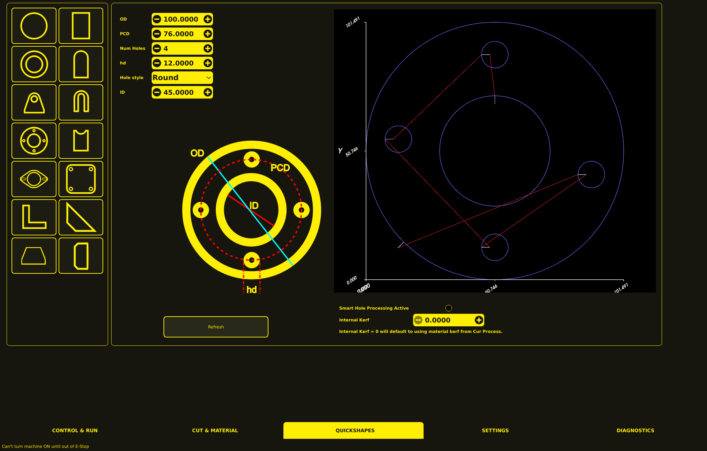

Conversational (Quickshapes)
The Conversational tab provides 14 built-in shape primitives that generate complete G-code programs. These are accessed via the Quickshapes tab at the bottom of the interface.

Using Quickshapes
Select a shape — Click one of the 14 shape buttons (id0 through id13).
Enter dimensions — Fill in the parameter fields that appear below the shape buttons.
Generate — Click REFRESH to generate the G-code.
Load — The generated G-code appears in the editor. Review and load it to run.
Shape Reference
Index |
Shape |
Description |
Key Parameters |
|---|---|---|---|
0 |
Circle |
Circle with lead-in |
Diameter |
1 |
Rectangle |
Rectangle with lead-in |
Width, Height |
2 |
Donut |
Annulus (ring) with inner and outer cuts |
Outer Diameter, Inner Diameter |
3 |
Convex Rectangle |
Rectangle with one rounded corner |
Width, Height, Corner Radius |
4 |
Lifting Lug |
Lifting lug with hole, optional pair |
Width, Height, Hole Position, Lug Thickness |
5 |
U-Lug |
U-shaped lug |
Width, Height, Leg Width, Leg Length |
6 |
Pipe Flange |
Pipe flange with center hole and bolt holes |
Outer Diameter, Bolt Circle Diameter, Hole Count, Hole Diameter |
7 |
Pipe Saddle |
Pipe saddle profile |
Pipe Diameter, Pipe Width, Saddle Depth |
8 |
Exhaust Flange |
Exhaust flange with slot holes |
Width, Height, Slot Count, Slot Width |
9 |
N-Square Grid |
N-hole rectangle grid with optional center hole |
Grid Spacing, Hole Count X, Hole Count Y, Hole Diameter |
10 |
L-Gusset |
L-shaped gusset |
Width, Height, Leg Width, Thickness |
11 |
Angle Gusset |
Angle gusset with optional mirrored pair |
Width, Height, Leg Width, Thickness |
12 |
Truss Support |
Truss support shape |
Width, Height, Web Height |
13 |
Web Stiffener |
Web stiffener shape |
Width, Height, Web Height |
Shape Features
All quickshape generators include:
Kerf compensation — Cut paths are offset by the current kerf value from the selected material.
Smart hole detection — Internal features that are smaller than the threshold defined in settings are cut as through-cuts (no lead-in needed).
Lead-ins — External cuts use the configured lead-in type and length from the material settings.
Plasma start/stop sequences — Each shape includes proper M3 (torch on) and M5 (torch off) commands with pierce and cut height settings.
Material selection — Parameters are applied based on the currently selected material from the process database.
G-code Structure
Each generated shape follows this structure:
; MonoKrom Quickshape - <shape name>
; Material: <selected material>
; Kerf: <kerf value>
(Start of shape program)
G0 Z<pierce height> (Rapid to pierce height)
G1 Z<pierce height> F<probe speed> (Probe approach)
(Ohmic probe or height sense)
G0 Z<pierce height> (Rapid to pierce height)
G4 P<pierce delay> (Pierce delay)
G1 Z<cut height> F<cut feed rate> (Lower to cut height)
G4 P<pierce delay> (Pierce delay at cut height)
M3 (Torch on)
(Lead-in move)
G1 <cut path> F<cut feed rate> (Cut path with kerf compensation)
M5 (Torch off)
G0 Z<higher safe height> (Retract)
Customizing Quickshapes
Quickshape parameters (kerf, lead-in type, hole detection threshold, etc.) are controlled by the currently selected material in the process database. See Parameters for details on managing materials and cut parameters.
To modify the shape geometry or add new shapes, see the Developer Guide.